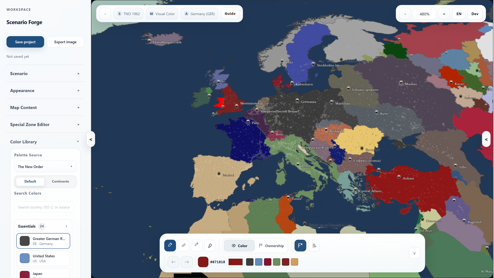

Every world starts with a map.
Drag through history. Then scroll — this map is the editor's whole story.
Drag through history. Then scroll — this map is the editor's whole story.
01 · Political state
Pick a colour and click a country on the map. The editor does this state by state, with presets, quick fill and 80 steps of undo.
02 · Cartography
Palettes, borders, labels and relief restyle the whole map at once.
03 · Context & data
Roads, rail and resources for China, France, Germany, India, Japan, Russia, the UK and the US, global transport networks, and data you can map.
On the map: Europe's main railways and largest cities.
04 · Starting worlds
Every start is a project file: keep editing it, or export PNG and JPG at up to 4×.
A separate, focused editor for the Historic Geographic Overhaul mod's 1936 world: repaint states, move ownership and cores, rename regions, export the whole map.
Provinces stay exactly as the mod draws them — 5120 × 2560, pixel for pixel.
Open HGO Atlas
No. Both editors run in a modern browser, and your projects are saved as files on your own computer.
Scenario Forge edits vector political maps across five starting worlds, with everything above. HGO Atlas edits one mod's native pixel map, state by state. Each has its own project files.
Yes. The code is MIT-licensed; map data comes from sources such as Natural Earth, geoBoundaries and OpenStreetMap, which keep their own terms. See all data sources